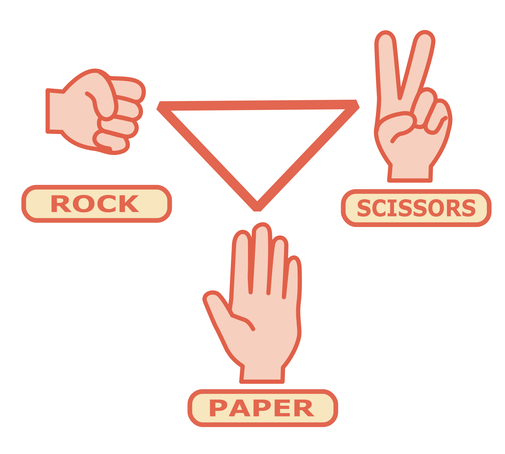

Lesson: Data Lab
Time: 45 mins
Overview
Practicing how to use a data table or database does not have to be boring. In fact, it doesn't even need to be resource intensive. This lab takes the classic game of "rock, paper, scissors" and adds 2 more characters. "Rock, Paper, Scissors, Lizard, Spock" is a creative branch of the game taken from the TV show "Big Bang Theory".
Purpose
This lab has students focus on the use of a data set and how we can use graphs to help us analyze data. I want to students to use modern technologies and learn to use a spreadsheet. So this lab gives to students an opportunity to have some movement and fun while still learning to use and analyze data.
Contents
Objectives
Create and utilize a data set that is then graphed and interpreted.
Indiana Standards
SEPS.2 Developing and using models and tools
SEPS.4 Analyzing and interpreting data
Materials & Resources
- computer
- a partner
- rock, paper, scissors, lizard, spock "how-to" graphic
- LAB: template
Assessment Opportunities
The database and the "Analysis" section of the lab will be used for assessment.
Warm-up
Present and explain the question and challenge for the lab. After explaining the lab and covering the objectives of the lab, it is useful to give students this time to practice the physical movement of the new characters. It is not easy, at first, to use 2 new characters in the game "rock, paper, scissors, lizard, spock". Explain to the students, that to avoid this bias in the data, you are going to give them time to practiec the physical motions necessary to play.
Activity
Direct Instruction
The goal of this lesson is for students to focus on the use of a data set. It will be necessary to remind students that although the 'game' part of this lesson is fun, it is important to remember to actually collect data. Before students write their hypothesis, show them the following graphics.

Graphics available at openclipart.org. You can use these graphics to demonstrate that the typical game of "Rock, Paper, Scissors" would give you 1 in 3 odds of winning. Explain that the specific question in this lab, is asking "if we add 2 more characters, will this impact our odds of winning with a particular character."
Guided Practice
Give students time to write their hypothesis. After confirming students have a solid hypothesis, place the students with partners. With a set of students as examples, guide the class through the routine of conducting a challenge and then following that with recording the data. Demonstrate how to best log their data into the spreadsheet. Make sure students understand that they will 10 challenges with that 1 partner. They will then find a new partner (or simply rotate) and then do 10 more challenges. Each set of 10 with a partner is considered 1 round. Students should collect data from 3 rounds.
Independent Practice
At this point, students will conduct their challenges and collect their data. When they are finished collecting their data, students will use the spreadsheet to create a pie chart of the data. Students will then make observations and analyze the data to evaluate their original hypothesis. Of course, the lab wraps-up with a conclusion, which students should use the RERUN format of writing the conclusion to ensure that it is complete.
Warp-up
Students will be interested in each others data. I encourage the students to conduct brief table talks in groups. In these table talks, students take turns sharing their data, like a proper scientist would, and then receive informal feedback from their peers. This is a less formal way of sharing their information and helps students feel more comfortable with the public speaking portion of class.